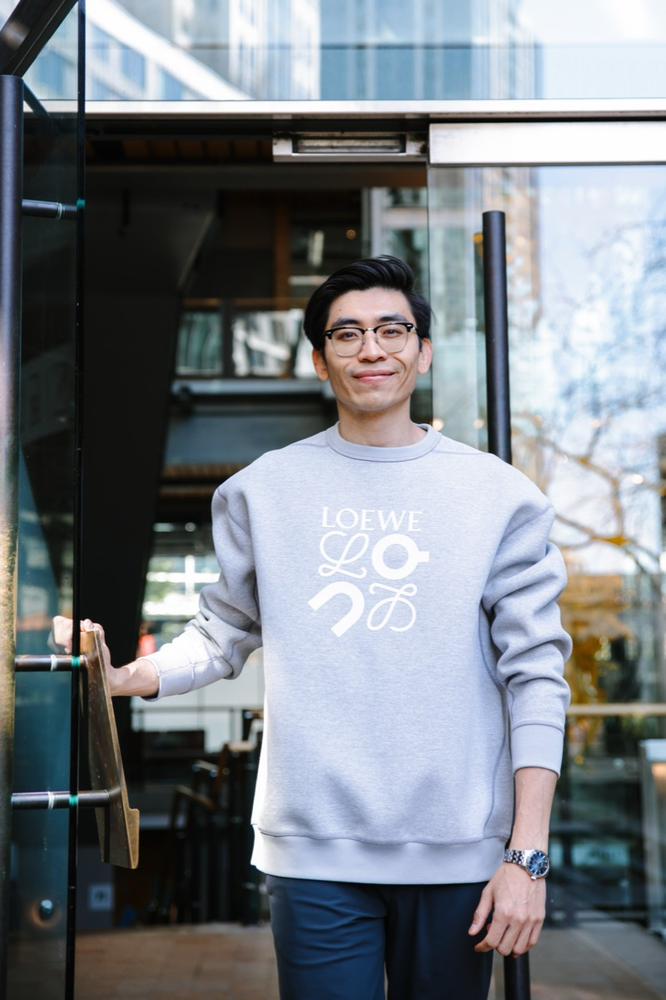

featured · 01
work in progress
Still actively building this one. A proper writeup and a live link are on the way — check back soon.
view project
ex-Coinbase · USC & UIUC alum
now: building, lifting, reading, & swinging clubs.

Still actively building this one. A proper writeup and a live link are on the way — check back soon.
view project